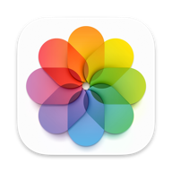

Von der SD-Karte
bis aufs Sofa.
Bearbeiten, archivieren, wiederfinden und teilen: Jedes Tool hat seine Aufgabe. Der gemeinsame Mittelpunkt ist dein Archiv mit normalen Dateien.
RAWs direkt auf der SD-Karte bearbeiten. Bearbeitungen bleiben als XMP beim Original.

Apple FotosFertige BilderDie fertigen JPEGs oder HEICs aus Nitro in Apple Fotos übernehmen.
Die SD-Karte später am Mac anschließen. TrueArchive übernimmt RAWs mit XMP und holt die fertigen Bilder aus Apple Fotos.
Dein Archiv
Originale · fertige Bilder · XMP
Normale Dateien, nach Jahren und Tagen sortiert. 2026 / 2026-09-10
Namen, Bewertungen und Beschreibungen pflegen. Nach Personen suchen, sobald Gesichter erkannt und benannt sind.
 ImmichAnsehen & teilen
ImmichAnsehen & teilenIm Browser und auf dem Handy durch die Bilder stöbern und sie mit der Familie teilen.
Archiv samt Metadaten auf einem zweiten Datenträger oder bei einem Backup-Dienst sichern.
Damit es im Alltag zusammenpasst.
- Die Metadaten bleiben bei den Bildern.
- XMP ist ein offener Standard für Metadaten. Die Begleitdateien speichern etwa Schlagwörter, Bewertungen und Bearbeitungsdaten. TrueArchive ergänzt vorhandene XMPs oder legt sie neu an. Unterschiedliche Nitro-Bearbeitungen bleiben bei verträglichen übrigen Metadaten als Varianten erhalten; andere Konflikte werden gemeldet. Das Zusammenspiel von Nitro, TrueArchive und digiKam ist mit echten Bildern noch nicht vollständig geprüft. Mehr zu Varianten.
- digiKam pflegt das Archiv.
- digiKam ist eine kostenlose Open-Source-Fotoverwaltung. Binde den Archivordner als Sammlung ein und aktiviere das Schreiben der Metadaten in XMP-Begleitdateien. So bleiben unterstützte Angaben auch außerhalb des digiKam-Katalogs erhalten. Die automatische Einrichtung durch TrueArchive ist geplant. XMP in digiKam einstellen.
- Immich ist das Fenster ins Archiv.
- Immich ist eine Open-Source-Foto-App für deinen eigenen Server. Dieser muss laufen, wenn du Bilder ansehen möchtest. Binde das Archiv als externe Bibliothek mit reinem Lesezugriff ein; es wird dabei nicht erneut hochgeladen. Nicht alle XMP-Felder und Nitro-Bearbeitungsdaten werden in Immich dargestellt. Nutze die fertigen Bilder zum Ansehen. Eine automatische TrueArchive-Anbindung ist noch nicht verfügbar. Externe Bibliotheken in Immich.
- Die zweite Sicherung schützt vor Verlust.
- Eine weitere Ansicht in digiKam oder Immich ist noch keine Sicherung. Sichere das Archiv unabhängig und prüfe, ob sich Dateien wiederherstellen lassen. Sichere bei Immich zusätzlich dessen Datenbank und eigene Dateien, etwa für Benutzer und Alben. Ein regelmäßiges Hetzner-Backup durch TrueArchive ist ein geplantes Modul. Immich sichern.
Du kannst auch andere Werkzeuge nutzen. Alte Festplatten, weitere Ordner und manuelle Google-Fotos-Exporte können als zusätzliche Quellen zu TrueArchive kommen. Die Programme werden getrennt installiert; die gemeinsame Nutzung ist kein Komplettpaket.
Deine Bilder. Dein Archiv. Dein Workflow.
Zur Beta anmeldenProduktlogos: Nitro / Gentlemen Coders, Apple Fotos / Apple, digiKam, Immich. Zur Kennzeichnung der jeweiligen Werkzeuge; keine offizielle Partnerschaft.